Overview
Modern wearables ship a tightly synchronized sensor stack: an outward-facing camera, one or more microphones, and an inertial unit sampling at hundreds of Hertz. The three are co-located on one body, driven by one clock, and present whenever the device is worn.
Yet the community's working model of egocentric understanding has stayed almost entirely visual. Open video models consume frames and nothing else; the strongest closed systems accept video and audio but ignore motion; and the large egocentric corpora are consumed as silent, motion-blind streams of pixels. That framing is a poor fit for how wearables are worn, because the camera is routinely occluded, dim, or pointed away while audio and motion keep carrying signal.
We build the three things needed to make the cost of that framing visible, and then show what the same structure buys on a device that cannot run its camera at full rate.
Synchronized V A I at clip granularity, annotation-grounded.
Every item tagged with the modality it requires; every axis calibrated against a floor.
A compact tri-modal model that encodes the raw inertial stream.
Always-on memory, with capture decided from the cheap streams.
Data Curation
An egocentric observation is not a video with side channels. A clip is a synchronized triple: the frames from the outward-facing camera, the waveform from the on-device microphones, and the paired inertial streams from the two head-mounted units, all recorded from one body against one clock.
Clips are drawn from head-mounted rigs that differ in field of view, microphone array, inertial rate, and native axis convention. That heterogeneity is deliberate: a corpus from one device would confound tri-modal understanding with the idiosyncrasies of one sensor stack, so all inertial data is normalized into a shared body frame and the device diversity is kept visible.
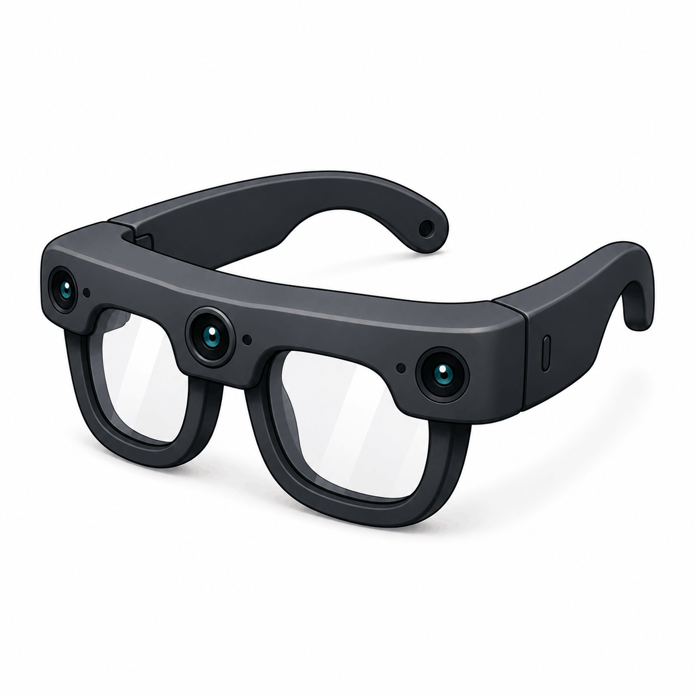
Two on-board inertial units
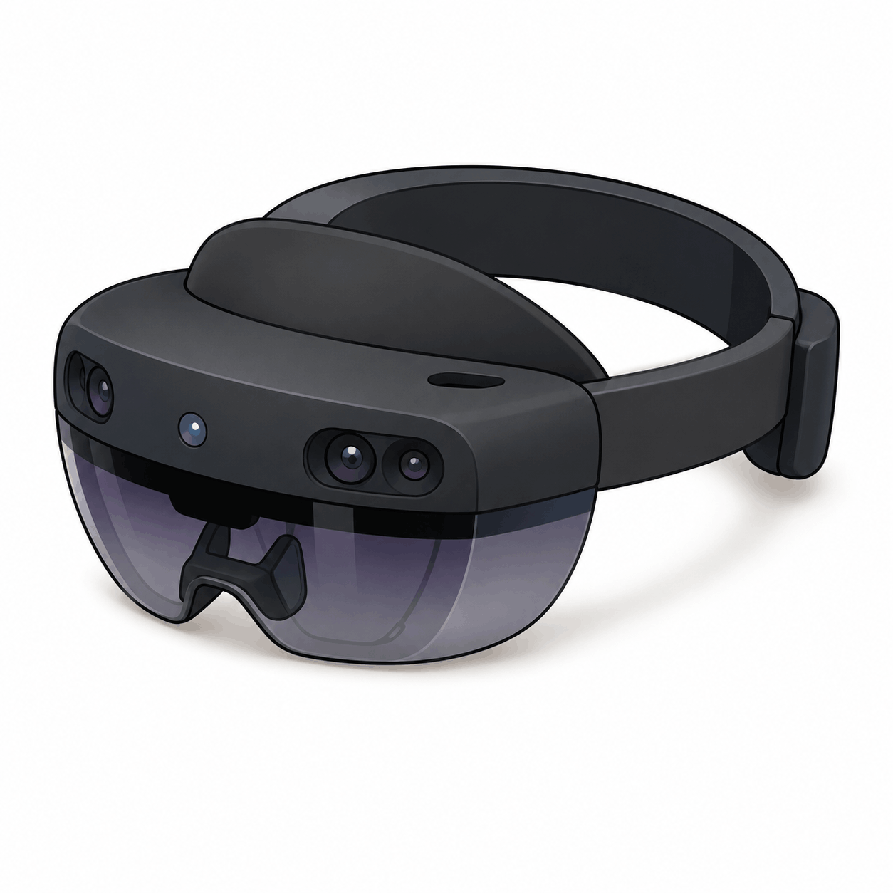
Single head unit
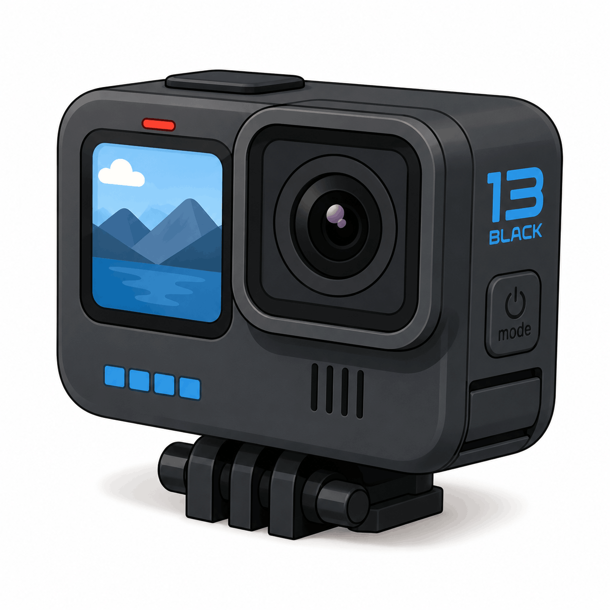
Action-camera capture
Activity coverage
The corpus spans seven domains, from unremarkable daily routine to fine-grained skilled activity, which are the two regimes egocentric understanding has to cover.
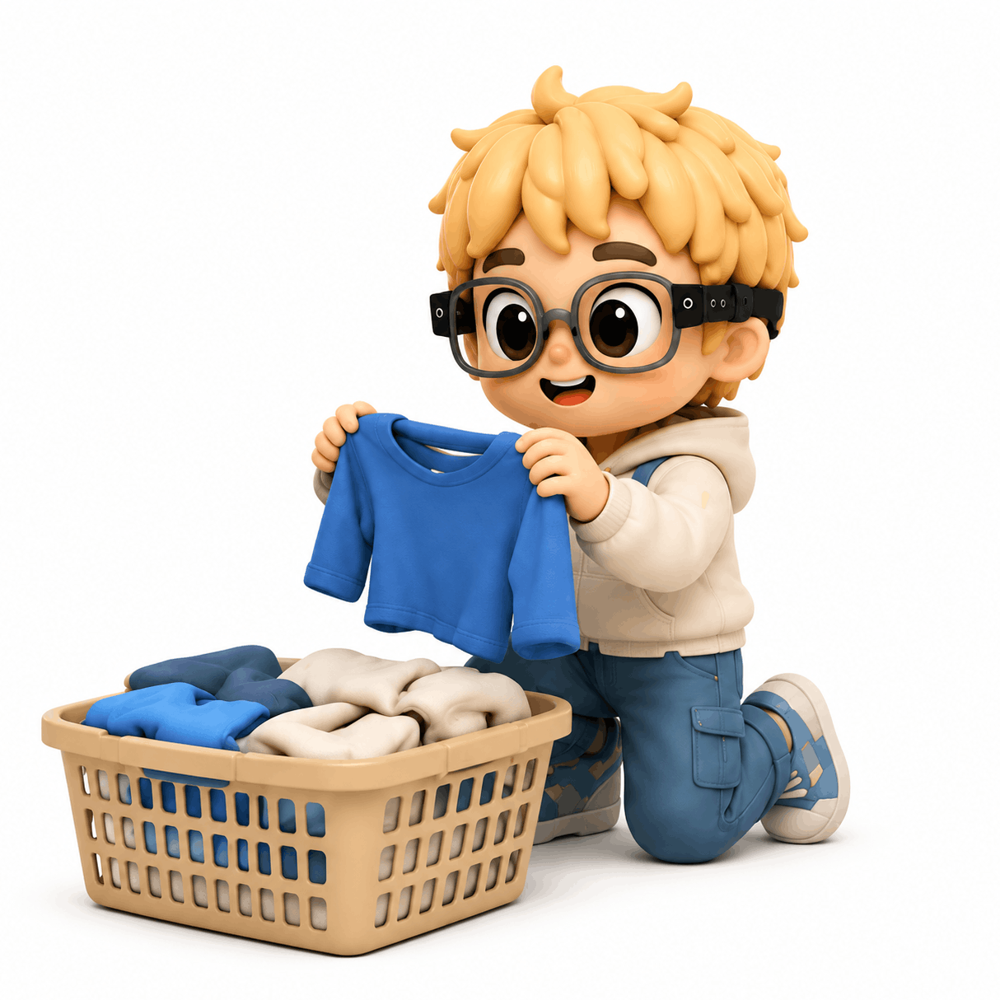
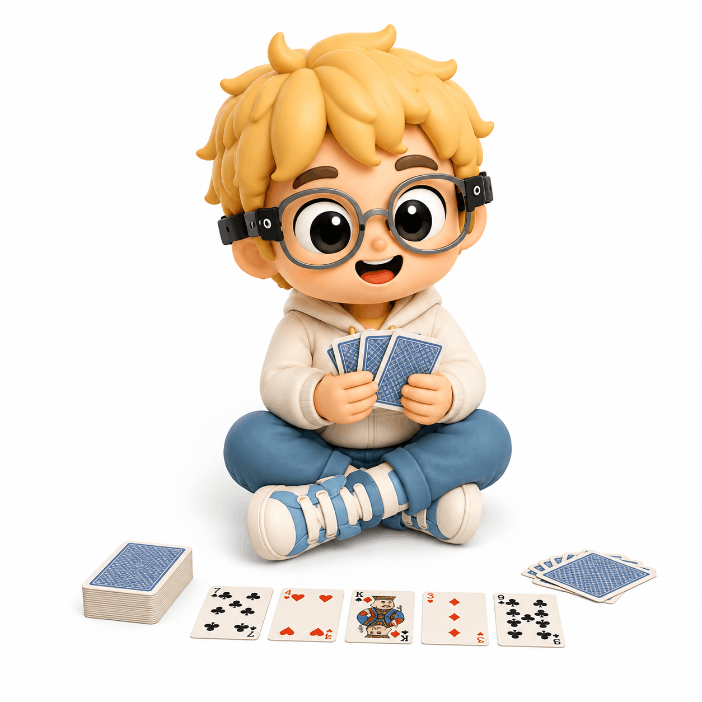
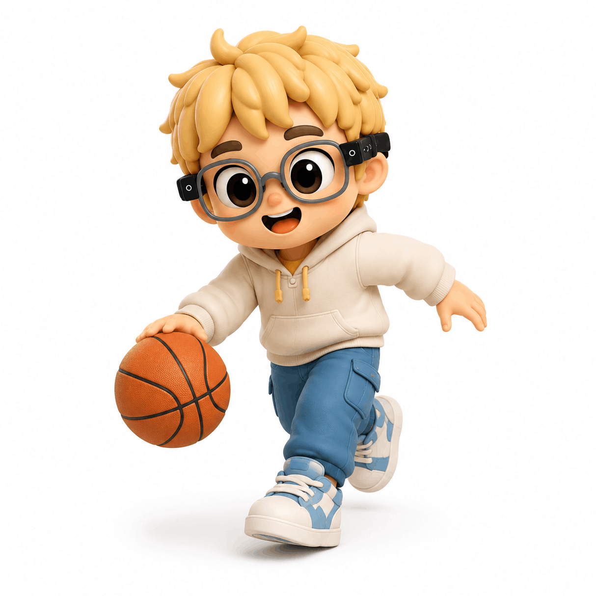
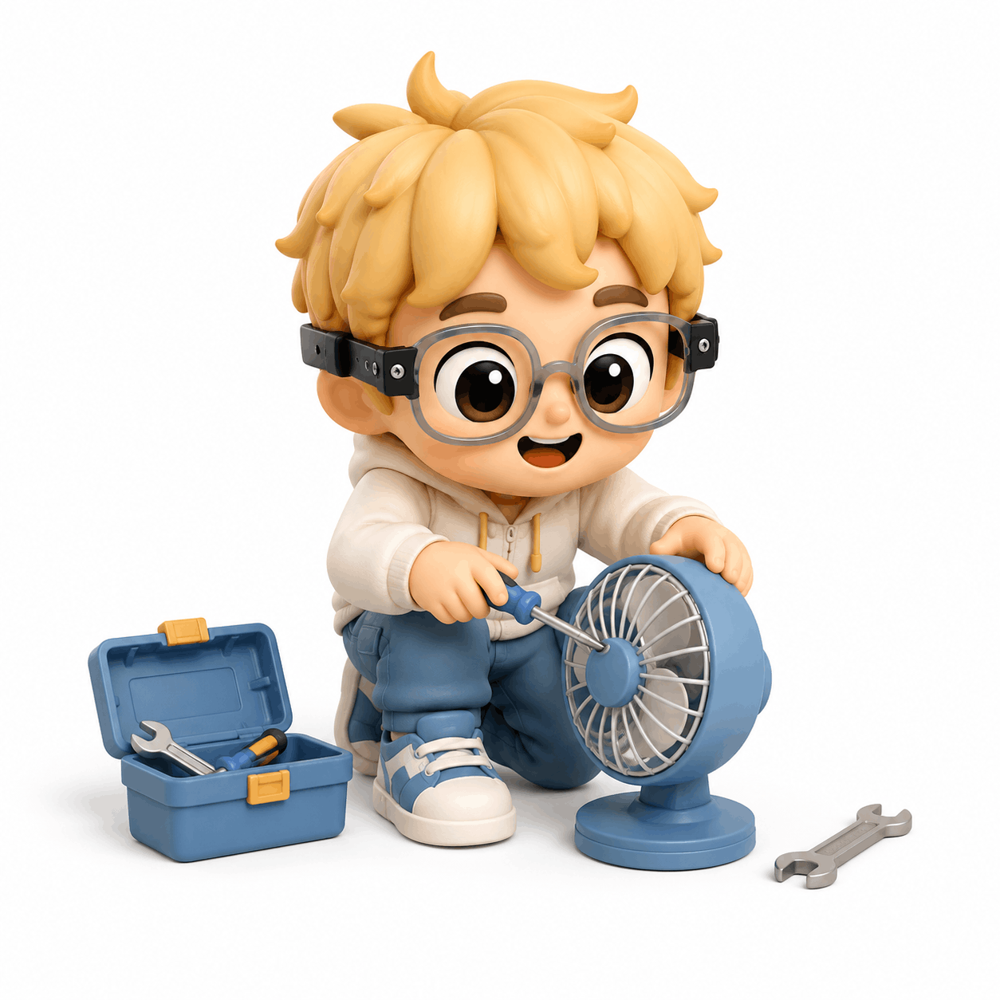
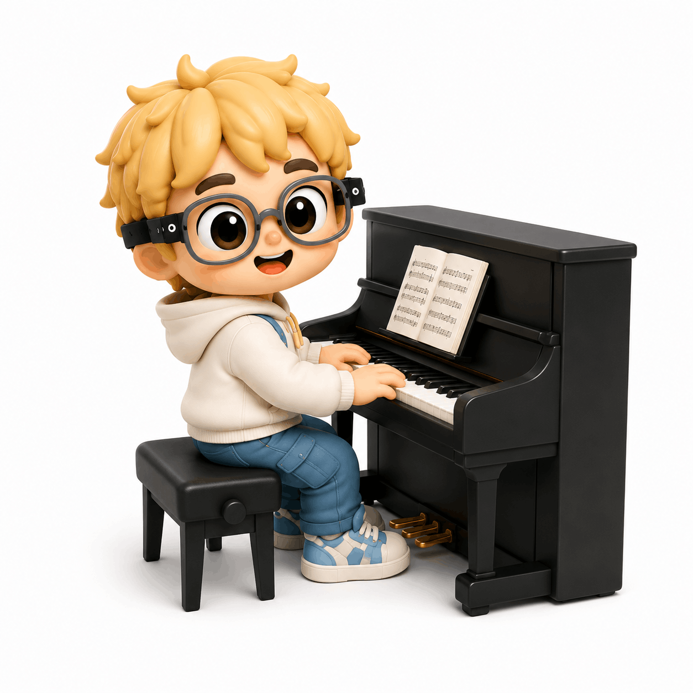
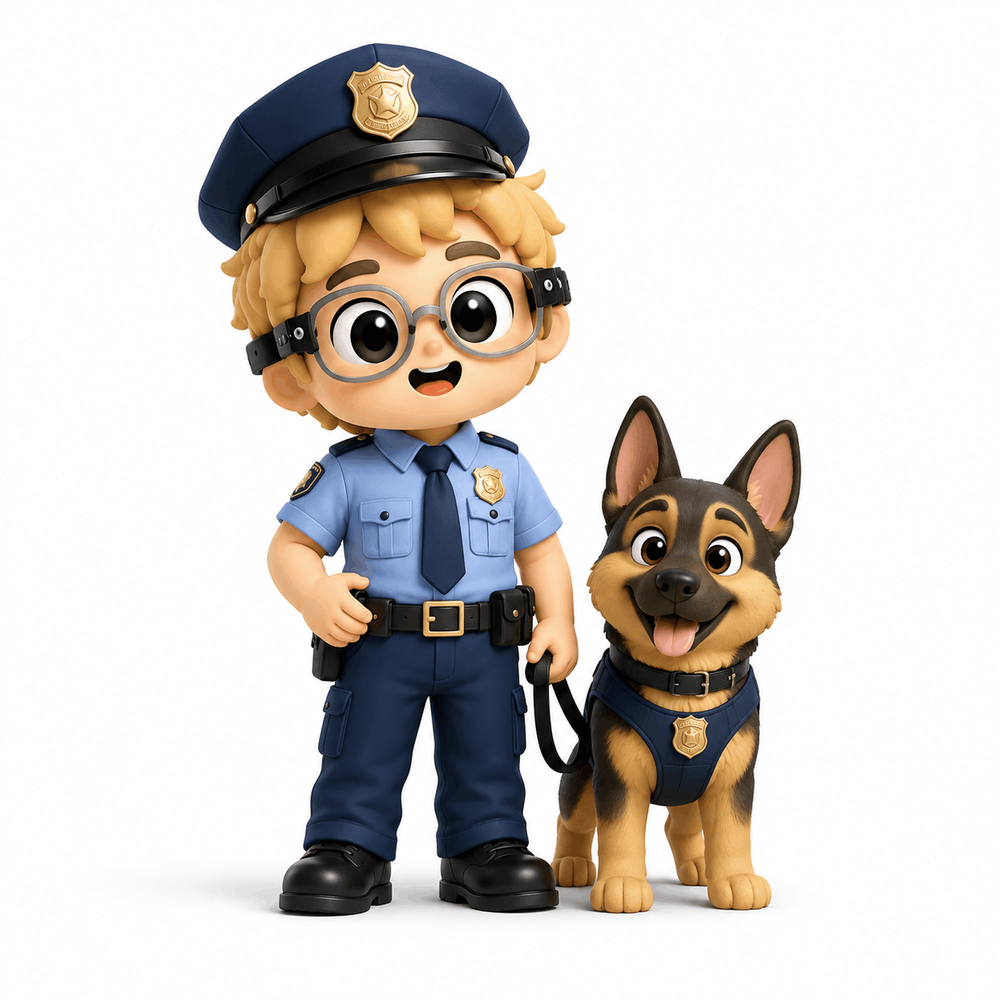
The EgoMMU Benchmark
A corpus makes tri-modal models possible; it does not make their behaviour legible. EgoMMU asks one question quantitatively: does a model actually use each sensor stream, or does it score well from priors? A single aggregate cannot tell the two apart.
The benchmark is therefore organized as task × modality. Five task families are each split by the modality required to answer, giving a grid of columns rather than a ranking. Reading a row states what a model can do; reading a column states what a modality contributes.
V A I
Includes speech-tone questions, unanswerable from frames, and bilateral asymmetry questions requiring both inertial units.
V A I
Fact check scores nothing for a wrong verdict, whatever the justification. Open QA items require a pair of modalities.
V A I
Temporal grounding is reported against a constant-span reference, so a score below it is not read as localization.
Every column has a floor
A column is only informative if it measures the modality it names, and that is a property to be established rather than assumed. For each axis we measure the score reachable without the modality under test, by withholding that stream or the media entirely. Items solvable at the floor measure difficulty rather than perception, and are removed. An audio item a silent model already answers is not an audio item.
Motion Signatures
Inertial signal is more discriminative than its low dimensionality suggests. Unlike a wrist- or thigh-worn sensor, a head-mounted unit separates activities by locomotion and head-orientation dynamics: still versus walking versus running, head pitch when looking down at a task, yaw when scanning a room.
Each clip below shows the head-orientation triad reconstructed from the gyro-integrated, gravity-corrected signal, beside the accelerometer and gyroscope traces. Hover to play.
The EgoMM Model
EgoMM extends a strong vision-language backbone rather than replacing it. Audio and motion enter as additional token blocks projected into the same embedding space, with no surgery on the backbone, so the recipe transfers as backbones improve.
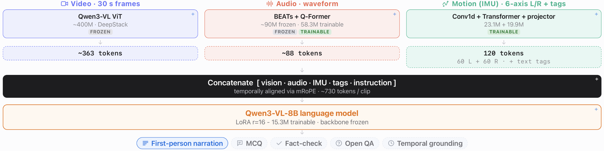
The motion branch reads the raw signal and is deliberately hybrid: a learned encoder sees the inertial waveform itself, while a rule-based path computes interpretable descriptors, covering locomotion state, cadence, head pitch, intensity, and bilateral symmetry, and presents them as text. The learned path captures dynamics no fixed feature set anticipates; the computed descriptors are exact and auditable.
EgoBuddy: an always-on companion
Per-clip understanding is not what a worn device is asked for. A companion switched on in the morning and consulted in the evening must answer from a day it has already lived through, having decided, continuously and without knowing the question, what was worth keeping.
The setting differs from clip-level evaluation in one structural respect: the question arrives after the evidence has passed. A system permitted to revisit the raw stream after seeing the question is solving retrieval over a recording; a system that must answer from what it chose to keep is solving the problem a device has.
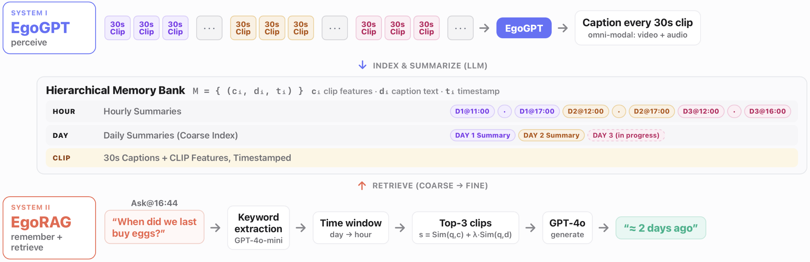
Capture is a decision, not a sampling rate
The three streams are not equally affordable. Microphones and inertial units draw little enough power to run all day; the camera and the vision stack that consumes its frames do not. And when audio is continuously available, a sparse frame budget already recovers most of what dense sampling records, because much of what can be said about a moment is carried by what was said and done in it.
So EgoBuddy scores capture-worthiness continuously from the streams it pays for anyway, and acquires a frame when they indicate the visual field has likely changed. The decision must be causal: choosing the best frames within a window requires having seen the window, which requires the camera to have been running throughout, which is exactly the cost the mechanism exists to avoid.
It is also irreversible. Frames that are not acquired are never stored, so unlike post-hoc sampling there is nothing to revisit. Condensation becomes a property of capture rather than of compression.
Leaderboard
Per-column results across the task × modality grid, with each column's floor shown as a reference, are released with the paper.
The interactive board will let you sort by any column and filter to a single modality, so the disagreement between columns is visible directly. Two results it will make plain: models that can hear clear video-only ones by a wide margin on the audio columns, while scores on the motion columns follow neither audio access nor parameter count, because no prior system receives an inertial stream at all.
Examples
Each example below is a real benchmark item. Toggle a modality off to see what the same models answer without it, which is the comparison the benchmark is built to support.
Clip media is being exported for static hosting; the cases and model predictions shown are from the evaluated board.
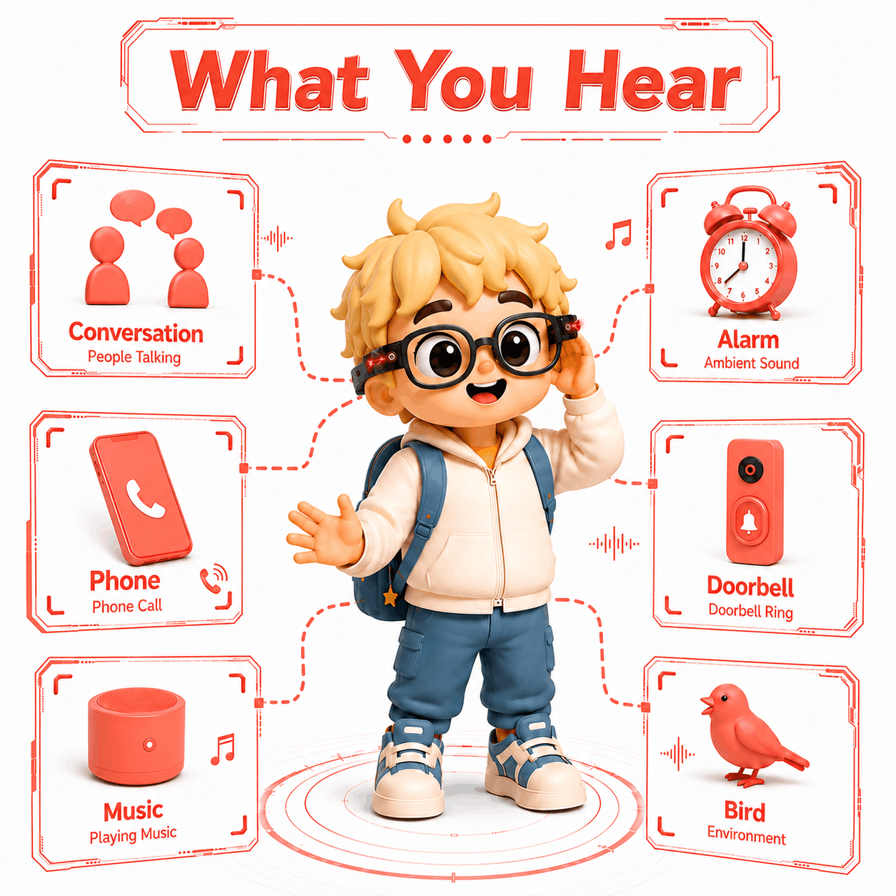
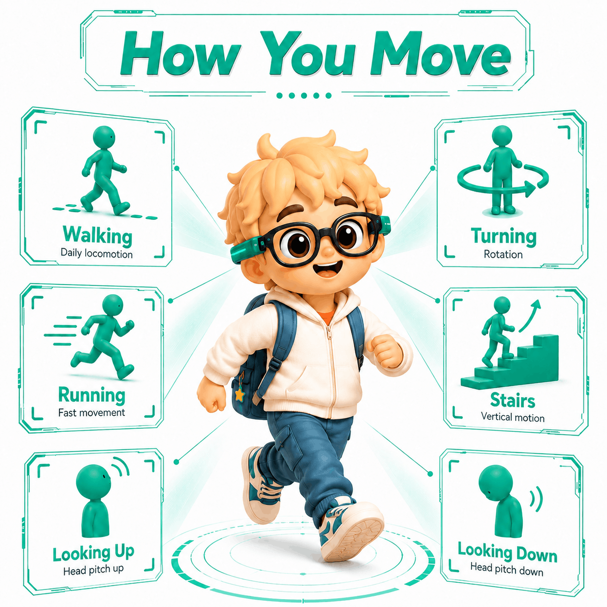
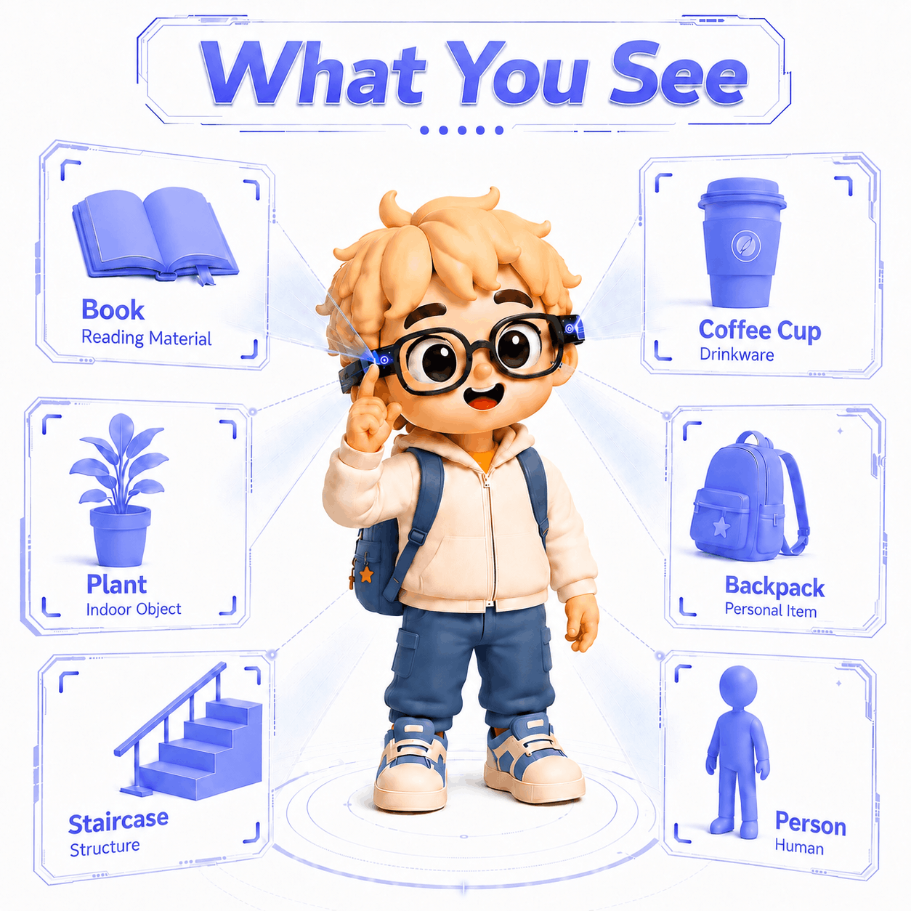
BibTeX
@article{egomm,
title = {EgoMM: Towards Multimodal Egocentric Intelligence},
author = {Kong, Lingdong and Park, Seth Dong Huk and Fu, Peter
and Susskind, Joshua M and Dehghan, Afshin},
journal = {arXiv preprint},
year = {2026},
url = {https://worldbench.github.io/EgoMM}
}